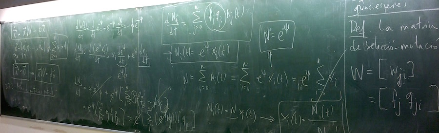
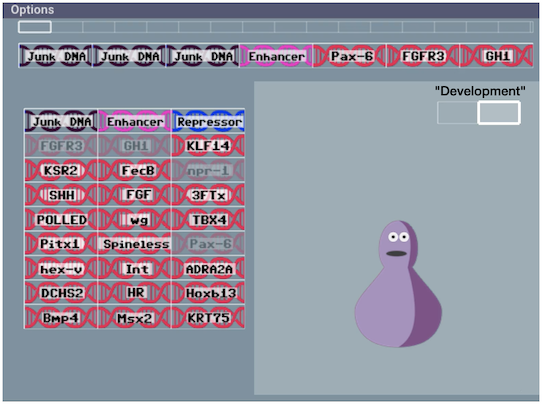
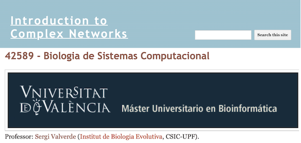

Teaching is a much-need component of scientific research. Sergi Valverde was teaching at the Degree of Biomedical Engineering (22106, 22107, 22117, 22123) and the Degree in Human Biology (20332) focuses in complex systems (Netlogo) , computational simulation (Matlab/Octave) and evolutionary algorithms (2008-2020). Our students learned how to solve engineering problems by programming computers by imitating the process of natural evolution. This is particularly relevant for both practical and theoretical reasons. First, evolutionary algorithms are highly cost-efficient when optimising complex systems with a very large number of degrees of freedom. Second, students learn how to approach reality from the evolutionary perspective. Finally, there are many bioengineering applications for evolutionary algorithms, e.g., parameter optimisation in biological circuits.

The knowledge about the principles of evolution and ecology is often inadequate. These principles play a key role in understanding of biological and cultural phenomena. Learning evolutionary theory involves abstract, difficult concepts such as probability and complexity, which are difficult to learn. To address these limitatons, we have prototyped Biocreator, a web-based simulation to help students understand the nature and importance of complexity in an evolutionary context. Biocreator allows students to define and test their synthetic designs (click here to play with the editor and share your designs with others. Students can edit the genomic sequence (real gene names are used) of synthetic organisms and discover complex genotype-phenotype mappings. Later on, students' designs can compete with each other in a virtual ecosystem (contact us if you want a demo). This way, students can put their knowledge about evolution and ecology to work.
Valverde, S., Vidiella, B., and Vila, R. (2022) "Biocreator: a distributed simulation for learning ecology and evolution" (submitted).

Materials for our "Introduction to Complex Networks" course at the Universitat de Valencia available here. These lessons are supported by Netlab, an online environment for modeling complex networks. Netlab has been designed and implemented by Sergi Valverde to help students simulating the evolution of complex networks.
Materials for the Summer Course 2017